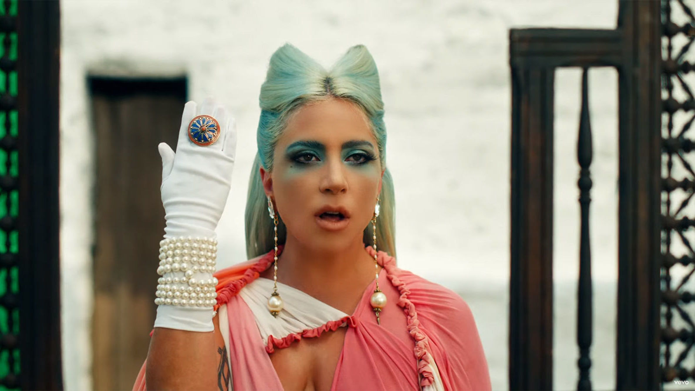
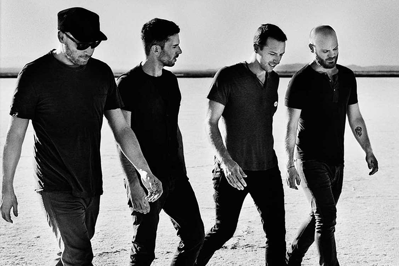

“Music is the literature of the heart; it commences where speech ends.”
Popular music is any musical style accessible to the
general public and disseminated by the mass media. Musicologist and popular
music specialist Philip Tagg defined
the notion in the light of sociocultural and economical aspects:
Popular music, unlike art music, is (1)
conceived for mass distribution to large and often socioculturally
heterogeneous groups of listeners, (2) stored and distributed in
non-written form, (3) only possible in an industrial monetary
economy where it becomes a commodity and (4) in capitalist societies,
subject to the laws of
'free' enterprise ... it should ideally sell as much as possible.
Исполнители:Дженнифер Лопес, Малума
Альбом:Pa Ti
Дата выпуска: 2020 г.
Язык:Spanish
Запись:2020
Продюсеры:Джон Леоне; Эдгар Баррера
Исполнитель: The Black Eyed Peas
Альбом: Translation
Дата выпуска: 2020 г.
Язык:Spanish
Запись:2020
Жанр: Поп-музыка
Исполнитель: Fousheé
Альбом: Deep End
Дата выпуска: 2020 г.
Запись:2020
Жанр: Ритм-н-блюз/соул
Исполнитель: Тэйт Макрэй
Альбом: you broke me first (Gryffin Remix)
Дата выпуска: 2020 г.
Запись:2020
Жанр: Поп-музыка
Исполнитель: Sasha Mad & JJ
Альбом: Нарисую
Дата выпуска: 2020 г.
Запись:2020
Жанр: Хип-хоп/рэп
Исполнитель: Наваи Бакиров
Альбом: Три песни
Дата выпуска: 2020 г.
Запись:2020
Жанр: Поп-музыка

911
"911" is a song by American singer Lady Gaga from her sixth
studio album, Chromatica (2020). It appears as the album's
eighth track, preceded by a string arrangement, "Chromatica II".
It was written by Gaga, Justin Tranter, BloodPop, and Madeon, with the
latter two also producing along with Benjamin Rice. It is a Euro disco,
synth-pop, and electropop song with influences from funk and techno.
Lyrically, it talks about mental health and the antipsychotic medication
the singer has to take. On September 18, 2020,
"911" was announced as the third single off of Chromatica.

Coldplay ([ˈkəʊldpleɪ]) — британская рок-группа. Начав играть в январе 1996 года,
настоящего успеха в мире Coldplay добились в 2000 году, после выхода их второго
сингла «Yellow» из альбома Parachutes, ворвавшегося на вершины всех чартов Великобритании
и Соединённых Штатов Америки. Альбомы Coldplay разошлись тиражом более 80 миллионов экземпляров.
Группа принимала участие в различных социальных проектах, таких как Band Aid 20, Live 8, кампании
в поддержку детей, больных раком. Также Coldplay выступили на закрытии параолимпийских игр
7 февраля 2016 года группа выступила в традиционном шоу в перерыве юбилейного пятидесятого Супербоула.